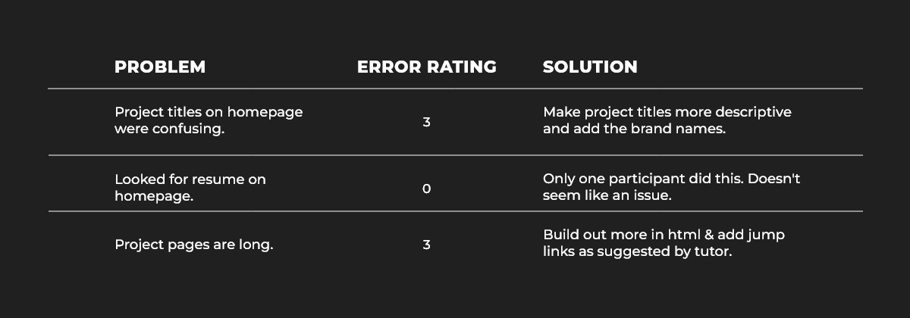

Portfolio Website Case Study
Project Overview
I used my basic knowledge of HTML, CSS and Javascript to create an online portfolio website showcasing my UI/UX projects.
UI/UX Designer & Front-End Developer
Course Length: 6 Weeks
Visual Studio Code, GitHub, GitHubPages, AdobeXD
Background
When I began my UI/UX journey, a friend of mine encouraged me to also develop front-end skills. Thankfully, my UI/UX course provided a specialization course called Front-End Development for Designers.
The Problem
I am looking to work as a UI/UX Designer, so I needed an online portfolio that could be easily viewed by potential employers. In addition to my UI/UX projects, I wanted to showcase my Front-End skills.
Goals
- Design a responsive website
- Showcase my UI/UX Projects
- Showcase my Front-End Development Skills
My Process
Curating the Content
First, I began by curating the content I wanted to feature on my website's home, about and project pages.
Coding with HTML, CSS & Javascript
Next, I began coding in HTML to build my web structure, in CSS to define the design and in Javascript to create the navigation menu interactivity. I also added some extra CSS rules to make the website responsive.
View My CodeUsability Testing
Finally, I conducted a user test to ensure good usability and user experience. The results showed that I need to make a few improvements.
Checking Accessibility
I used a color accessibility checker to ensure all the color combinations on my website passed the AA accessibility grade.
The Solution
A responsive portfolio website showcasing two UI/UX projects, a Front-End project, information about me and my skills plus my contact information.
Lessons Learned
Developing front-end skills has improved my understanding of design limitations and helped me translate my designs into HTML, CSS and Javascript. I've learned to work through a few challenges like understanding CSS rule-sets and Javascript functions. I have a deeper appreciation for the web development phase and I'm motivated to work more collaboratively with developers.